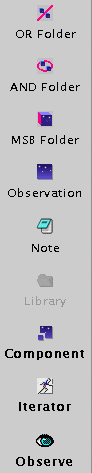

| SCIENCE PROGRAM WINDOW | |
| Menu
Bar |
|
| Edit Menu |
the usual edit items: Cut, Copy, Paste etc.
These can be used on objects (MSBs, Observations, components) in the
science program window, and also on text selected in text boxes. |
| View Menu |
option settings for the Science Program window.
(e.g. whether the main toolbar is displayed as images or text.) |
| Go Menu |
nothing
important. |
| Database Menu |
store your programme to the summit database
using the "Store" item in this menu. The other functions are
permanently greyed out. |
| Help |
this help |
|
Tool Bar
|
|
| File open |
same as File...Open ("Open" on the File menu) |
| Forward button |
ignore |
| Back button |
ignore |
| Cut |
cuts the currently selected item in the science
program window |
| Copy |
copies the currently selected item in the
science program window |
| Paste |
pastes the cut or copied item into the
programme at the current highlight. Details depend on what's being
pasted. |
| Save |
same as File...save (i.e. saves program to a
local disk file) |
| Position editor |
runs the position editor (relevant only after
you've set up target components) |
| Validate |
check the program for bugs |
|
Component toolbar

|
OR Folder - inserts a folder which combines MSBs within it using "OR" logic AND Folder - inserts a folder which combines OR folders within it using "AND" logic MSB - inserts an MSB Observation - inserts an observation (normally within an MSB) Note - inserts an informational note. Make as much use of these as you can. One note per Observation can be selected to pop up for the Observer's benefit at the telescope. Component - inserts a "component". Starting from the libraries you will not need to do this. Iterator - inserts an "Iterator" (described more fully in the main page). Starting from the libraries you will not need to do this. Observe - inserts an "Observe" (which results in one data file). Starting from the libraries you will not need to do this. |
|
Program display panel
 |
Title - informative title. this will appear on the MSB list at the telescope. PI - Your name Country - UK, USA, etc. (don't worry about format - this code is an administrative formality, not used by the database in filtering observations). Project ID - Get this from your support astronomer before submitting the program to the database. Estimated time - the OT estimates the total time for your programme and enters it here. See the main OT document for a statement of the limitations of the precision of this estimate. |